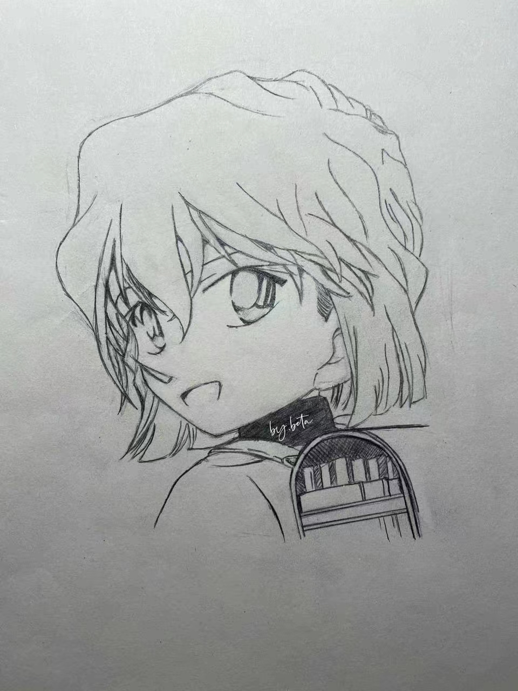
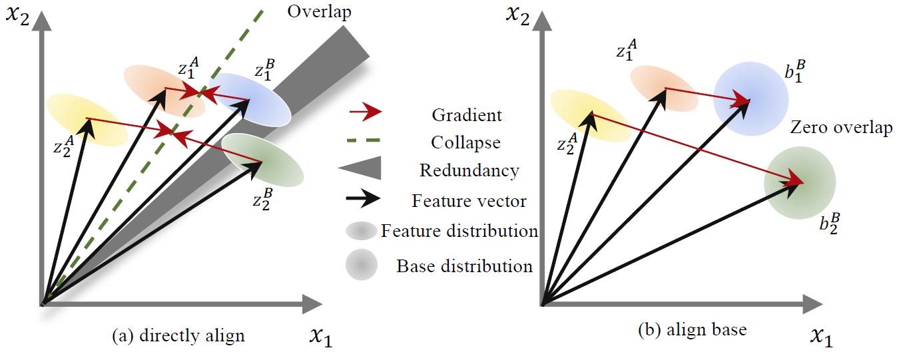
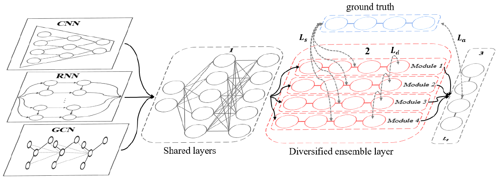
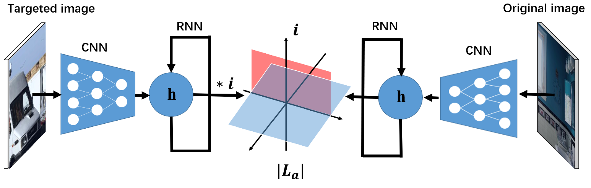

Shaofeng Zhang 张少锋
|  | Ph.D. |
Biography
I'm currently a first-year Ph.D. student in Shanghai Jiao Tong University, supervised by Prof. Junchi Yan and Prof. Xiaokang Yang. I got my bachelor's degrees in University of Electronic Science and Technology of China.
My research interests include: Self-Supervised Learning, Graph Neural Networks, Unsupervised Learning.
If you are interested in working with me, please feel free to contact me through the email.
News
Publications
See full list at Google Scholar.|  | Shaofeng Zhang, Lyn Qiu, Feng Zhu, Junchi Yan1, Hengrui Zhang, Rui Zhao, Hongyang Li, Xiaokang Yang 2022 IEEE / CVF Computer Vision and Pattern Recognition Conference (CVPR'22) We propose a new self supervised learning method to align the representation with base. |
 |
Shaofeng Zhang, Feng Zhu, Junchi Yan, Rui Zhao, Xiaokang Yang 2022 International Conference on Learning Representations (ICLR'22) We propose a new symmetric contrastive learning method without negatives. |
|  | Shaofeng Zhang, Meng Liu1, Junchi Yan 2020 Annual Conference on Neural Information Processing Systems (NeurIPS'20) We propose to ensemble neural networks via increasing the diversity of base models. |
|  | Shaofeng Zhang, Zheng Wang, Xing Xu, Xiang Guan, Yang Yang 2020 IEEE International Conference on Multimedia & Expo (ICME'20) We propose a multi-modal adverasarial attack method. |
Working Experience
Research intern at Sensetime Research. (since Jul. 2021)
Explore the representation learning and general self-supervised learning.Research intern at Tencent. (Feb. 2021 to May. 2021)
Worked on improving the generalization ability of unsupervised classification and detection.Research intern at SmartMore. (Jun. 2021 to Aug. 2021)
Worked on general represetantion learning.Research intern at Microsoft Research. (Jan. 2020 to Jul. 2020)
Contributed to the AI education book and github project.I serve as a reviewer of the following conferences and journals: CVPR'22, ECCV'22.